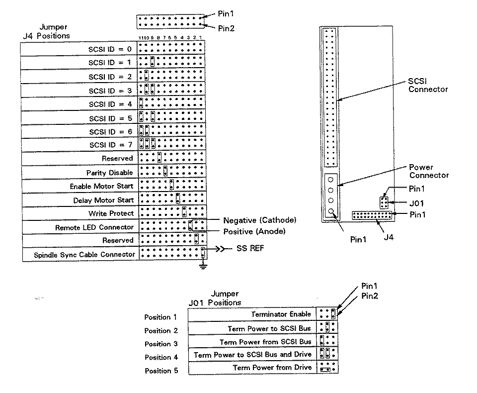

Caution
The drive SCSI ID (address) is set on J4 (see the following Figure). Table 1 shows the pin-sets for the options available with the A3352A 3.5-inch hard disk drive. The actual settings depend uponthe system in which the drive is installed and its location within that system. See your service manual or CE handbook for specific configuration and jumper setting information.
Table 2 provides a functional description of the configuration jumper settings.
A pin-set either shorted (with a jumper installed) or open (without a jumper). The option settings are shown on the following Figure.
| Function | Connector | Pin-Set |
| Terminator Enable | J1 | 1-2 |
| Term Power to SCSI Bus | J1 | 3-4 |
| Term Power from SCSI Bus | J1 | 5-6 |
| Term Power from Drive | J1 | 4-6* |
| Spindle Sync | J4 | pin 1 = SSREF*, pin 2 = gnd |
| Reserved | J4 | 3-4 |
| Unit Activity LED | J4 | pin 5 = Anode*, pin 6 = Cathode |
| Write Protect | J4 | 7-8 |
| Delay Motor Start | J4 | 9-10 |
| Enable Motor Start | J4 | 11-12 |
| Parity Disable | J4 | 5-6 |
| Reserved | J4 | 3-4 |
| SCSI ID 0 | J4 | 17-18 |
| SCSI ID 1 | J4 | 19-20 |
| SCSI ID 2 | J4 | 21-22 |
*See the following Figure for detailsTable 1: A3352A Option Jumpers

Figure 1: A3352A 4-GB Drive ID and Option Header (MFG #ST15150N)
| Connector | Pin-Set | Function | Configuration |
| J1 | 1-2 | Enable Terminator | Open: Drive internal terminators are not connected to the SCSI bus. Jumpered: Drive internal connectors are connected to the SCSI bus. |
| J1 | 3-4 | Term Power to SCSI Bus | Open: Drive does not supply term power to SCSIpin 26. Jumpered: Drive supplies termination power to pin 26 of the SCSI bus. |
| J1 | 5-6 | Term Power from SCSI Bus | Open: No termination power from SCSI bus to drive terminators. Jumpered: Termination power from SCSI bus connected to drive terminators |
| J1 | 4-6 | Term Power from Drive | Open: No terminator power is connected to the drive internal connectors. Jumpered: The Drive supplies its own terminator power. |
| J4 | 1-2 | Spindle Sync | Provides connection for spindle sync signal. Pin 1 SSREF, pin 2 = gnd |
| J4 | 3-4 | Reserved | Open |
| J4 | 5-6 | Unit Active LED | Provides the connection for the drive active LED. Pin 5 = cathode, pin 6= anode |
| J4 | 7-8 | Write Protect | Open: Drive is not write protected. Jumpered: Entire drive is write protected. |
| J4 | 9-10 | Delayed Motor Start | Open: Spindle starts immediately after power on, unless Enable Motor Start jumper is installed. Jumpered: Spindle startup is delayed be SCSI ID 0 times 10 seconds. |
| J4 | 11-12 | Enable Motor Start | Open: Spindle will spin up according to the Delay Motor Start open. Jumpered: Drive waits for the START UNIT command from the host. |
| J4 | 13-14 | Parity Disable | Open: Parity checking and reporting by the drive enabled.Jumpered:Drive does not report the result of parity checking to host. |
| J4 | 15-16 | Reserved | Open |
| J4 | 17-18 | SCSI ID 0 | Open: SCSI address bit 0 set to 0. Jumpered:SCSI address bit 0 set to 1 |
| J4 | 19-20 | SCSI ID 1 | Open: SCSI address bit 1 set to 0. Jumpered:SCSI address bit 1 set to 1. |
| J4 | 21-22 | SCSI ID 2 | Open: SCSI address bit 2 set to 0. Jumpered:SCSI address bit 2set to 1. |